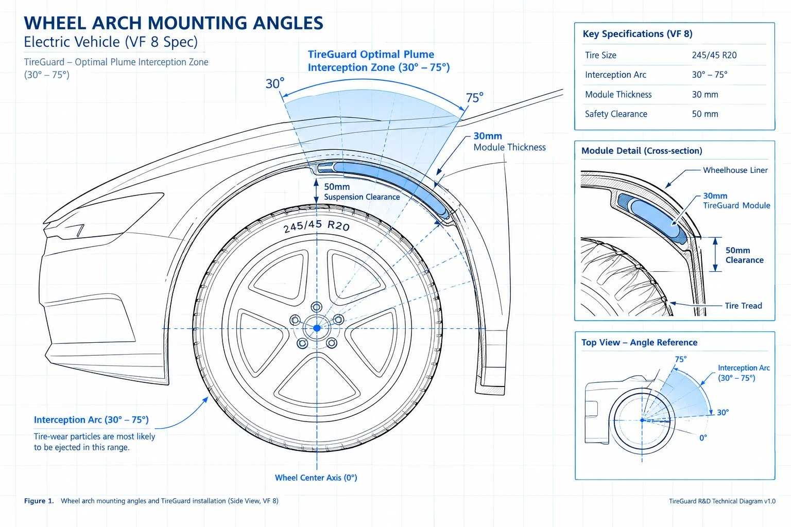
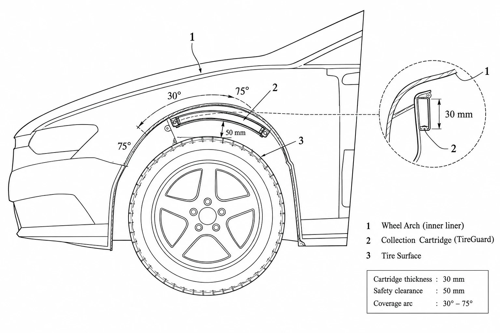

Bụi lốp bị bắt trước khi chạm mặt đường.
Thiết bị chìm hẳn vào vòm hốc bánh sau, ôm góc văng ly tâm 30°–75°. Kéo để xoay, cuộn để phóng to, bấm “Lội nước” để xem chu trình ngắt điện.
Mô phỏng dòng hạt
Mô phỏng minh họa nguyên lý, hiệu chuẩn theo mục tiêu R&D 60–75% (chủ động) và ≈ 40% (thụ động). Không phải kết quả CFD hay đo thực địa.
Xe điện bỏ được ống xả, nhưng không bỏ được lốp.
Xe điện nặng hơn vì bộ pin, tăng tốc nhanh hơn, nên mài mòn lốp mạnh hơn. Phần phát thải này không đi qua ống xả nên không nằm trong bất kỳ phép đo khí thải nào — và cũng chưa có luật nào phạt nó. Ở Đông Nam Á, mỗi trận mưa lớn lại cuốn thẳng lượng bụi đó xuống hệ thống sông ngòi.
Các bộ thu gom hiện có là điểm khởi đầu tốt, nhưng không thể mặc định lắp vừa mọi dòng xe: hình học lốp, hốc bánh, khe hở phuộc và luồng khí đều khác nhau. Và việc đưa chúng vào điều kiện ngập thường xuyên, đường ổ gà của Đông Nam Á vẫn là bài toán chưa có lời giải.
Tham số hóa quanh lốp 245/45 R20 của VF 8.
Không có một hộp “dùng chung cho mọi xe”. Mỗi dòng xe được tính lại từ bốn nhóm biến: hình học lốp và hốc bánh, hành trình phuộc, trường khí động học trong hốc bánh (CFD), và tọa độ chốt gá nguyên bản. Bảng dưới là cấu hình mẫu cho VinFast VF 8.
| Thông số | Ký hiệu | Giá trị | Ràng buộc kỹ thuật |
|---|---|---|---|
| Hình học & lắp đặt | |||
| Bán kính ngoài lốp | Rtire | 365 mm | Lốp tiêu chuẩn 245/45 R20. |
| Bán kính vòm máng bẫy | Rarch | 415 mm | Ôm theo mặt cong trong của tấm lót hốc bánh. |
| Khe hở hành trình phuộc | Gapclear | 50 mm | Cần kiểm tra lại khi xe đầy tải và phuộc nén hết hành trình. |
| Cung thu gom | θ | 30° – 75° | Tính từ trục ngang tâm bánh xe, chọn theo mô hình CFD — nơi chùm hạt văng ly tâm dày nhất. |
| Chiều rộng máng bẫy | Wactive | 260 mm | Rộng hơn mặt lốp 15 mm để hứng bụi văng xiên. |
| Bề dày tổng thể | Thousing | 30 mm | Vỏ 10 mm + lõi tổ ong 15 mm + khe khí. Mục tiêu giữ nguyên Cd ≈ 0,20. |
| Chiều dài cung | Larc | ≈ 325 mm | Góc quét 45° ôm sát vách nhựa hốc bánh. |
| Ô lục giác lõi tổ ong | dcell | 3 mm | Vách 0,5 mm; khí luồn qua, đồng thời là bẫy cơ học khi tắt tĩnh điện. |
| Thời gian thay khay | tswap | ≈ 30 s | Khay trượt theo ray, gá vào chốt nhựa nguyên bản — không khoan, không đục. |
| Điện & an toàn | |||
| Điện áp bẫy | UHV | 3 – 5 kV DC | Giữ dưới ngưỡng phóng điện vầng quang để hạn chế sinh ozone — tác nhân biến 6PPD thành 6PPD-quinone. |
| Công suất tiêu thụ | P | < 3 W | Lấy từ nguồn phụ 12 V của xe, không đụng tới pin kéo. |
| Bán kính bo bản cực | re | ≥ 2 mm | Bo tròn để điện trường cục bộ không vượt ngưỡng corona. |
| Cảm biến ngập | IP68 | 50×30×15 mm | Cảm biến điện dung ở mép dưới và hai vách; ngắt cao áp < 2 ms. |
| Xả điện thế dư | tdis | < 5 ms | Mạch xả chủ động nối bản cực qua điện trở an toàn. |
| Ngưỡng dòng rò khi khởi động mềm | Ileak | 2 mA | Vượt ngưỡng thì dừng tăng áp và xả lại về 0 V. |
| Thu gom | |||
| Dung tích khay Cartridge | Vcart | 250 cm³ | Chứa ≈ 100 g bụi nén. |
| Chu kỳ thay khay | Lswap | 12.000–15.000 km | Trùng kỳ bảo dưỡng định kỳ của xe. |
| Hiệu suất mục tiêu | η | 60 – 75% | Với chùm hạt văng ly tâm từ lốp. Mục tiêu R&D, cần nguyên mẫu kiểm chứng. |
Mọi giá trị là mục tiêu thiết kế cho cấu hình VF 8 và cần kiểm chứng trên nguyên mẫu. An toàn điện, chuẩn IP68 và tương thích điện từ ECE R10 đều phải qua thử nghiệm.
Hiệu suất thu gom theo tốc độ xe
Đường cong mục tiêu R&D của nhóm. Ở chế độ chủ động, hiệu suất tăng theo tốc độ vì hạt văng ra nhanh hơn và đi thẳng vào cung 30°–75°; khi ngập nước, thiết bị chỉ còn bẫy cơ học.
Xem dạng bảng
Đường cong là mục tiêu thiết kế và ước tính của nhóm, chưa phải số đo trên xe. Đường đối chứng là ước tính theo cấu hình mô tả trong CN115320726B. Mô phỏng ở tab Mô hình 3D được hiệu chuẩn cho khớp dải này: ≈ 69% khi chủ động, ≈ 40% khi thụ động.
Bản vẽ lắp đặt


Ba chi tiết, dưới 3 W từ nguồn 12 V.
Khung gá ôm hốc bánh
Vỏ ABS gia cường sợi carbon, bán kính trong 415 mm, ngoài 445 mm, quét cung 45°. Ngàm gài khớp tọa độ chốt nhựa nguyên bản của hãng; hai rãnh trượt sâu 5 mm làm ray cho khay.
Lõi bẫy tổ ong
Dày 15 mm, ô lục giác 3 mm, vách 0,5 mm. Trường 3–5 kV DC dùng lực Coulomb ghim hạt vào vách; khi tắt điện, chính cấu trúc tổ ong làm bẫy cơ học. Khay 250 cm³ rút ra trong khoảng 30 giây.
Máng hứng & mạch ngắt
Máng 260×40×20 mm ở điểm thấp nhất (30°), nơi bụi nặng rơi xuống. Bo điều khiển và bộ nâng áp đúc epoxy nguyên khối, mục tiêu IP68; cảm biến điện dung báo ngập để ngắt cao áp dưới 2 ms.
Quy trình thu gom
- Phát sinh hạtMa sát lốp – mặt đường xé ra hạt TRWP, văng lên theo phương tiếp tuyến vào cung 30°–75°.
- Giấu vào hốc bánhThiết bị dẹt 30 mm nằm sâu trong lót hốc bánh, không treo ngoài — ít chịu va đập từ ổ gà, đá văng và vỉa hè.
- Bẫy tĩnh điệnTrường 3–5 kV DC bẻ cong quỹ đạo của hạt; lực Coulomb ghim hạt vào vách tổ ong rồi trôi dần xuống máng hứng.
- Thay khay, khép vòngHệ thống báo khi khay gần đầy; thay sau 12.000–15.000 km cùng kỳ bảo dưỡng. Bụi cao su bán lại cho đơn vị tái chế.
Năm bước khi xe lội nước
Thiết bị cao áp giữ điện áp liên tục khi ngập là rủi ro rò điện. TireGuard tách việc này thành năm bước có thời gian cụ thể.
- 01Phát hiện nướcCảm biến điện dung ở mép dưới và hai vách máng bẫy nhận ra hằng số điện môi thay đổi.t = 0
- 02Ngắt cao ápVi điều khiển đóng công tắc bán dẫn, cắt nguồn 3–5 kV khỏi bản cực.< 2 ms
- 03Xả điện dưMạch xả chủ động đưa điện thế còn lại trên bản cực qua điện trở về 0 V.< 5 ms
- 04Bẫy thụ độngSuốt lúc còn nước, lõi tổ ong bẫy cơ học — mục tiêu khoảng 40% hạt. Điện tử đúc epoxy, mục tiêu IP68.khi còn ngập
- 05Khởi động mềmKhô liên tục 2–3 s thì tăng áp dần 0 → 1 → 2,5 → 4 kV trong 0,5–1 s. Dòng rò vượt 2 mA thì dừng và xả lại.2–3 s + 0,5–1 s
Vì sao bắt đầu từ hai bánh sau
Bánh sau, bộ kit cho hạm đội
Bánh trước đánh lái tới khoảng ±40° kèm nhún phuộc, nên không gian hốc bánh thay đổi liên tục. Bánh sau cố định góc, và xe điện tăng tốc mạnh dồn tải về trục sau, làm lốp sau mòn nhanh. Lắp hai bánh sau giảm độ phức tạp và chi phí cho giai đoạn thử.
Đủ bốn bánh, đúc vào lót hốc bánh
Bộ bánh trước được đúc thẳng vào tấm lót hốc bánh trên dây chuyền, dùng màng bẫy dẻo uốn theo góc lái và một bộ điều khiển bốn kênh, không can thiệp vào hệ thống lái.
Vì sao đặt ở 30°–75° chứ không treo ngoài
Hạt bụi rời gai lốp theo phương tiếp tuyến với vận tốc ban đầu v₍x0₎, rồi bay theo quỹ đạo parabol khi đi vào vùng điện trường đều. Đặt máng bẫy đúng dải góc này nghĩa là đón hạt ngay tại đoạn quỹ đạo bị bẻ cong mạnh nhất — và giấu toàn bộ hệ thống điện sâu trong vòm nhựa, tránh đá văng, ổ gà và nước ngập.
Fe = qE là lực Coulomb, Fg + Fb là trọng lực đã trừ lực đẩy Archimedes, Fd là lực cản Stokes có hiệu chỉnh Cunningham cho hạt PM2.5. Mô phỏng trên trang này giải hệ đó ở dạng rút gọn, thời gian thực.
Những hướng đã có, và chỗ trống còn lại.
| Hướng tiếp cận | Đại diện | Điểm mạnh | Điểm yếu tại Đông Nam Á |
|---|---|---|---|
| Lốp ít mài mòn | Michelin, Continental, Bridgestone | Giảm hạt ngay tại nguồn, không cần lắp thêm thiết bị. | Phải đổi vật liệu và thiết kế cho từng dòng xe, mà ma sát vẫn là điều kiện bắt buộc để an toàn. |
| Bẫy tĩnh điện treo ngoài | The Tyre Collective WO2021152331A1 | Dùng luồng khí và điện trường bắt hạt ngay cạnh bánh xe. | Giá đỡ nhô ra ngoài dễ chịu va đập trên đường xấu; giữ cao áp liên tục khi lội nước làm dấy lên lo ngại rò điện. |
| Hai cụm thu gom mỗi bánh | Đại học Ninh Ba (Trung Quốc) | Tích hợp hai kênh thu gom vào hốc bánh. | Tám cụm trên một xe — tăng chi phí lắp đặt, thử nghiệm và bảo trì cho hạm đội. |
| Thu gom sau khi hạt rơi | Xe quét đường, lưới lọc cống | Gom được nhiều loại rác đường khác nhau. | Chỉ hoạt động sau khi hạt đã chạm đường. Mưa lớn cuốn 6PPD xuống cống, sông, kênh trước khi kịp quét. |
| TireGuard | Bẫy tĩnh điện chìm trong hốc bánh, 1 cụm mỗi bánh | Dẹt 30 mm trong lót hốc bánh; ngắt cao áp < 2 ms khi ngập rồi bẫy cơ học; 4 cụm mỗi xe thay vì 8. | Chưa có nguyên mẫu kiểm chứng trên đường. Cần thử IP68, ECE R10, và cần hãng xe đồng hành cho bánh trước. |
Ba điểm khác biệt
Ít va đập mặt đường
So với cấu hình có giá đỡ bên ngoài, TireGuard dẹt 30 mm và nằm sâu trong lót hốc bánh — tránh phần lớn ổ gà, đá văng và vỉa hè cao.
Phản ứng khi ngập
Phát hiện nước, ngắt tĩnh điện dưới 2 ms, bẫy cơ học trong lúc ngập rồi khởi động mềm khi đã ráo.
Ít cụm hơn mỗi xe
Một cụm mỗi bánh, tổng bốn cụm thay vì tám — đơn giản hơn khi lắp, khi bảo trì và khi tính chi phí cho hạm đội.
Kết cấu không giá treo ngoài cộng mạch ngắt khi ngập là hướng thiết kế lại (design-around) so với WO2021152331A1. Khả năng bảo hộ độc lập cần được đánh giá bởi chuyên gia sở hữu trí tuệ.
Bán bộ kit cho hạm đội trước, tích hợp vào nhà máy sau.
2 bánh sau · 150 USD/xe
- Giá mỗi bánh75 USD (~1,9 tr ₫)
- Phần cứng mỗi xe150 USD (~3,75 tr ₫)
- Khay thay thế15 USD/bánh/lần
- Khay mỗi xe mỗi năm*30 USD (~750 k ₫)
Bán cho các hạm đội như Xanh SM, Grab, Be. Chỉ hai bánh sau để tránh góc đánh lái và giữ chi phí đầu tư thấp.
4 bánh · 250–300 USD/xe
- Số bánh4, cả trước lẫn sau
- Phần cứng mỗi xe250–300 USD (~6,2–7,5 tr ₫)
- Khay mỗi xe mỗi năm*60 USD (~1,5 tr ₫)
- Lắp đặtĐúc vào lót hốc bánh
Khi hợp tác với hãng xe, màng bẫy dẻo được đúc chìm vào lót hốc bánh ngay trên dây chuyền; chi phí khuôn chia trên sản lượng lớn.
* Tính một lần thay mỗi năm, tương ứng 12.000–15.000 km. Xe chạy dịch vụ đi nhiều hơn sẽ thay nhiều lần hơn — xem máy tính bên dưới.
Bốn nguồn thu
Phần cứng
Bán và lắp bộ kit cho hạm đội; về sau là hợp đồng linh kiện OEM.
Khay thay thế
Doanh thu lặp lại theo km, đi cùng mạng lưới gara bảo dưỡng.
Bụi cao su
Bụi SBR/BR thu được bán cho đơn vị tái chế, ví dụ làm phụ gia nhựa đường.
Dữ liệu & báo cáo ESG
Gói API quản lý hạm đội và báo cáo ESG — xem hai tab Hạm đội và Dữ liệu mở. Giá: đang để trống.
Máy tính chi phí cho hạm đội
Mọi con số là giả định của nhóm, chưa kiểm toán. Nhóm ước tính hạm đội hoàn vốn phần cứng 150 USD/xe trong khoảng 26 tháng, nhờ giảm 0,25–0,5% lãi vay tín dụng xanh, tín chỉ nhựa và tiền bán bụi cao su — các khoản này cần được xác nhận với ngân hàng và đơn vị tái chế.
Mười bảy tháng từ nguyên mẫu đến hạm đội.
Nguyên mẫu bánh sau
Hoàn thiện nguyên mẫu hai khay, đề xuất với VinFast một đợt thử khoảng 50 xe. Kiểm tra độ chắc của ngàm gá, khe hở phuộc, hiệu suất thu gom, và chu trình ngắt – khởi động lại khi ướt.
Bốn bánh & công cụ giám sát
Phát triển khay bánh trước theo góc lái và nhún phuộc, cùng hãng xe tích hợp vào lót hốc bánh. Thử va đập ổ gà và ngập lặp lại. Xây website và ứng dụng hiển thị độ đầy khay, khối lượng thu gom và hiệu suất đã kiểm chứng.
Thí điểm hạm đội
Đến tháng 15, mục tiêu lắp khoảng 100 xe VinFast do Xanh SM vận hành, tùy thỏa thuận. Đánh giá hiệu suất, nhu cầu bảo trì, độ tin cậy khi chở khách; làm marketing bằng kết quả đã kiểm chứng.
Nhân rộng
Thêm dòng xe bằng cách tính lại kích thước và ngàm gá; mở rộng sang Đông Nam Á, rồi so sánh với các bộ thu gom ở châu Âu.
Kiểm chứng đi kèm từng giai đoạn
- Lấy mẫu bụi trong khay, phân tích Py-GC/MS tại phòng thí nghiệm đạt ISO/IEC 17025 để định lượng vi nhựa lốp và 6PPD.
- Thử IP68, an toàn điện và tương thích điện từ ECE R10 trước khi chạy trên xe chở khách.
- Đo khe hở khi đầy tải và phuộc nén hết hành trình, trên đường ổ gà thực tế.
- Chỉ đưa lên ứng dụng và báo cáo ESG những con số đã qua kiểm chứng độc lập.
Mỗi chiếc xe tự báo khi khay gần đầy.
Bộ điều khiển TireGuard gửi độ đầy khay, km kể từ lần thay, điện áp, dòng rò và sự kiện ngập lên máy chủ qua thiết bị telematics của xe. Hạm đội đọc dữ liệu đó qua API, nhận cảnh báo khi tới hạn bảo dưỡng, và gọi trạm dịch vụ gần nhất khi không thể thay khay trên đường.
Xe trong hạm đội demo
Quy tắc cảnh báo
API cho đối tác
REST + JSON, xác thực bằng khóa API của hạm đội. Bấm một endpoint để gửi yêu cầu tới API giả lập và xem phản hồi.
Webhook
Công khai số liệu thu gom, khi chủ xe đồng ý.
Dữ liệu từ khay thu gom giúp hạm đội chứng minh nỗ lực giảm ô nhiễm. Khi được hạm đội cho phép, dữ liệu đã ẩn danh và tổng hợp được mở cho viện nghiên cứu môi trường đánh giá, xếp hạng ESG, và cho cơ quan quản lý dùng làm số liệu theo dõi ô nhiễm không qua ống xả.
Ba mức đồng ý chia sẻ
Hạm đội chọn mức chia sẻ và rút lại bất kỳ lúc nào. Thử chọn bên dưới để xem ai nhìn thấy gì.
Bảng điểm ESG của hạm đội
Đang để trống vì chưa có dữ liệu thí điểm. Bật “Điền số liệu demo” để xem bảng điểm trông thế nào khi có số liệu.
Cách tính hạng ESG (đề xuất)
Trọng số là đề xuất ban đầu của nhóm, sẽ hiệu chỉnh cùng viện nghiên cứu đối tác. Chưa xếp hạng nếu có dưới 3 tháng dữ liệu đã kiểm định.
Số liệu cho cơ quan quản lý
Tổng hợp theo quận, chỉ công bố ô nào có từ 10 xe trở lên để không lần ngược ra từng xe.
Đối tác dữ liệu
Nguyên tắc dữ liệu
- Chỉ chia sẻ khi hạm đội đồng ý bằng văn bản; rút lại được bất kỳ lúc nào. Thiết kế theo Nghị định 13/2023/NĐ-CP về bảo vệ dữ liệu cá nhân.
- Không chia sẻ biển số, VIN, hành trình GPS hay danh tính tài xế ra ngoài hạm đội. Bên ngoài chỉ thấy số liệu tổng hợp theo quận và theo tháng.
- Mỗi con số ghi rõ nguồn: ước tính từ cảm biến hay đã cân và phân tích tại phòng thí nghiệm.
- Bộ dữ liệu tổng hợp công khai theo giấy phép CC BY 4.0, cập nhật hằng tháng.
Số liệu trên trang này lấy từ đâu.
- OECD (2020) — Non-exhaust Particulate Emissions from Road Transport. Xe điện nặng hơn có thể thải thêm 3–8% hạt mịn không qua ống xả so với xe xăng tương đương.
- ADB (2025) — Xe điện chiếm khoảng 40% doanh số ô tô tại Việt Nam, 20% Thái Lan, 15% Indonesia.
- US EPA (2025) — 6PPD phản ứng với ozone tạo 6PPD-quinone, bị mưa cuốn xuống nguồn nước và có thể gây chết một số loài cá.
- Evangeliou et al. (2020) — Hạt bụi lốp dưới 2,5 µm lơ lửng lâu và phát tán xa khỏi con đường nơi chúng sinh ra.
- Mantecca et al. (2010) — Hạt lốp mịn đi vào sâu trong phổi và gây viêm cấp ở chuột thí nghiệm.
- Brook et al. (2010) — Phơi nhiễm PM2.5 liên quan tới tăng nguy cơ tim mạch.
- McKinsey & NielsenIQ (2023) — 600.000 sản phẩm tại Mỹ: sản phẩm có tuyên bố ESG tăng trưởng doanh số tích lũy 28% (2017 – 6/2022), so với 20% ở nhóm còn lại.
- PwC Voice of the Consumer (2024) — Người tiêu dùng sẵn sàng trả thêm trung bình 9,7% cho hàng bền vững; 54% người được hỏi tại Việt Nam sẵn sàng trả thêm tới 10%.
- Grab ESG Report (2024) — Hơn 17 triệu chuyến bật tùy chọn “Eco-Friendly” tại Thái Lan và Singapore.
- Uber — Rider Emission Savings — Tiền lệ thiết kế: hiển thị lượng CO₂ tiết kiệm ước tính cho từng chuyến và giải thích cách tính.
- University of Washington (2020) — Nghiên cứu truy ra 6PPD-quinone là nguyên nhân gây chết hàng loạt cá hồi coho.
MÔ HÌNH DỰNG THEO THÔNG SỐ CAD · KHÔNG PHẢI BẢN VẼ CHẾ TẠO